SwimSafe teaches survival swimming. Anchal offers supervised childcare.
See programmesTurning research into safer childhoods.
We work with communities in Bangladesh to prevent injuries and improve care.
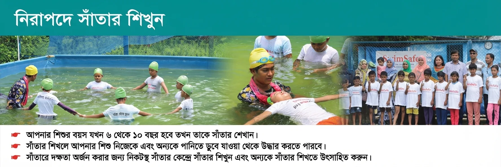
Where we focus
Health systems research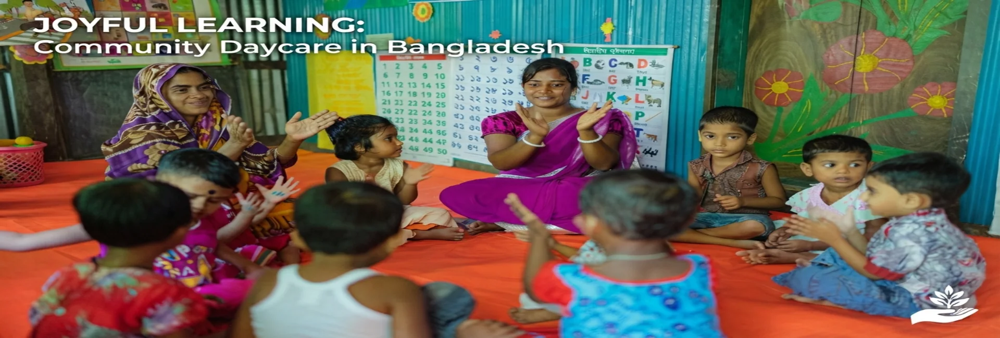
Research supports safer pregnancies and better care for mothers and children.
Explore this work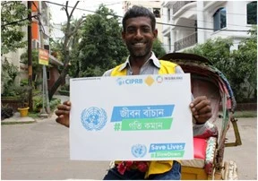
CIPRB studies how to prevent road injuries and improve care after crashes.
Explore road safety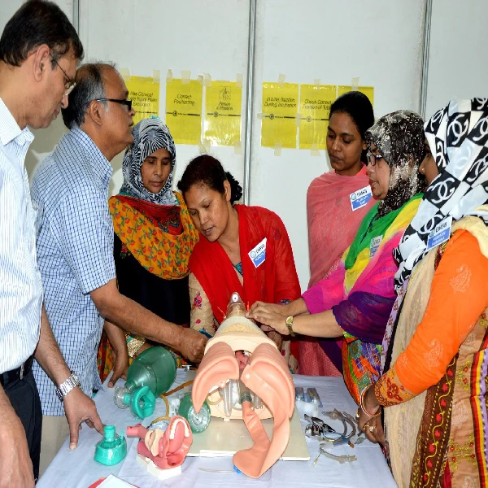
Injury prevention includes reducing burn risks and improving access to care.
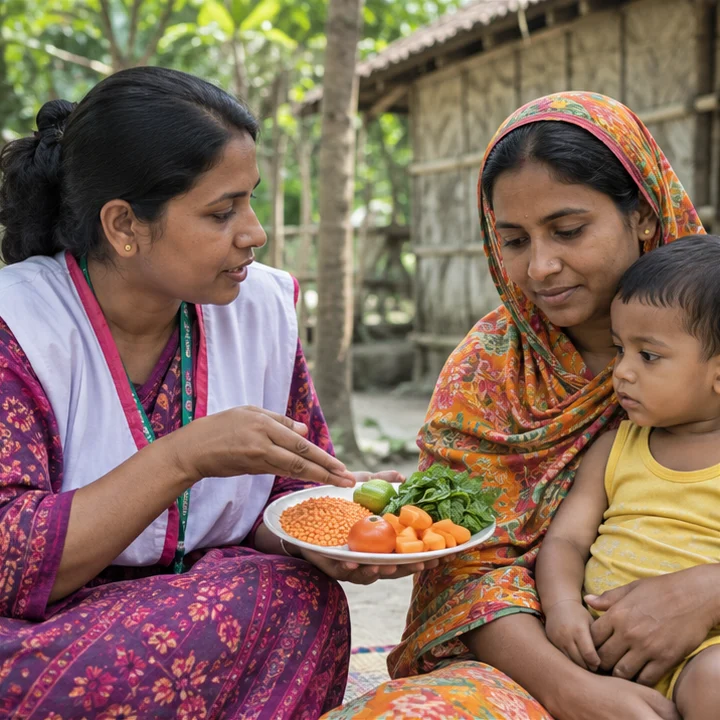
Nutrition is part of CIPRB’s wider public health focus.
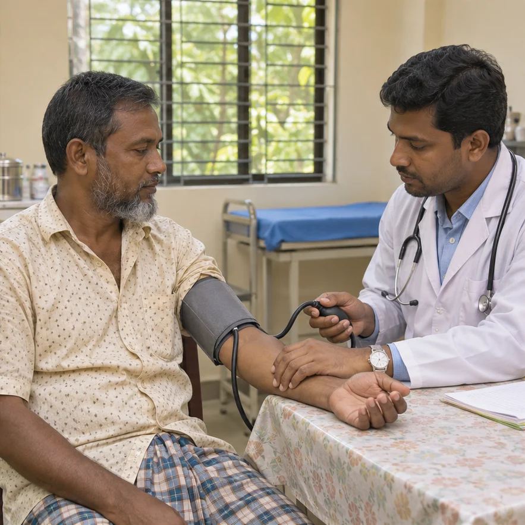
CIPRB researches long-term health conditions and ways to address them.
Explore the research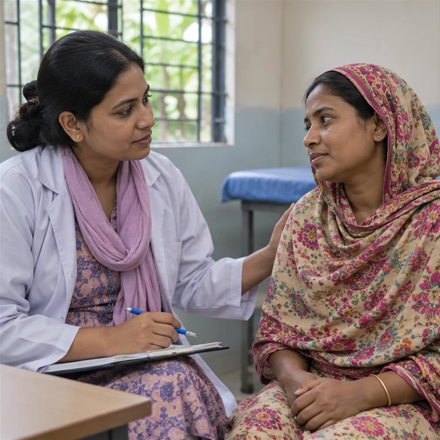
Mental health sits within CIPRB’s research on chronic conditions and wellbeing.
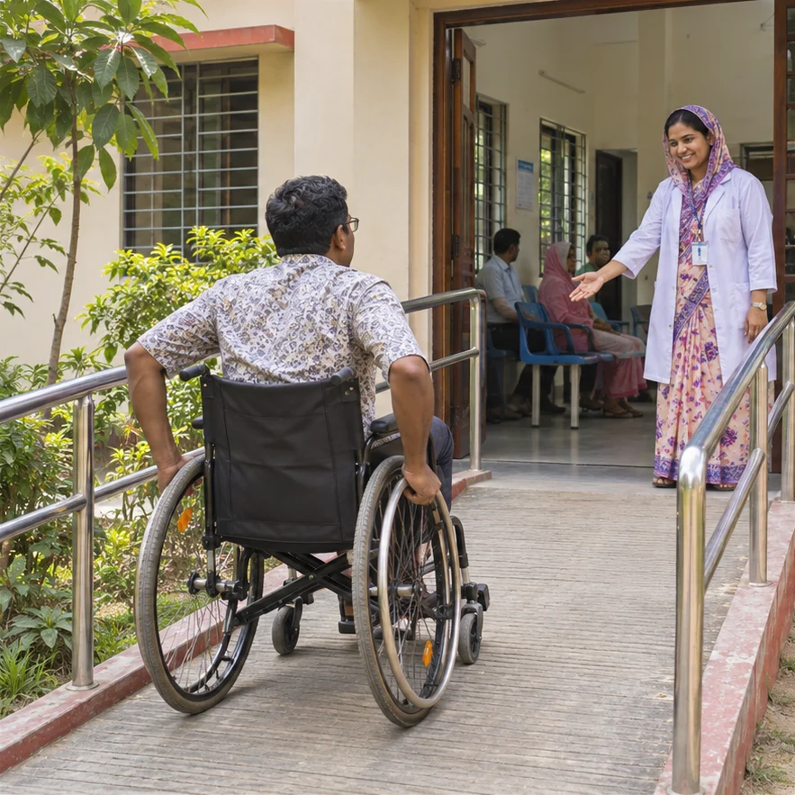
CIPRB works to improve access to health and childcare services for people with disabilities.
Explore inclusive careCommunity programmes
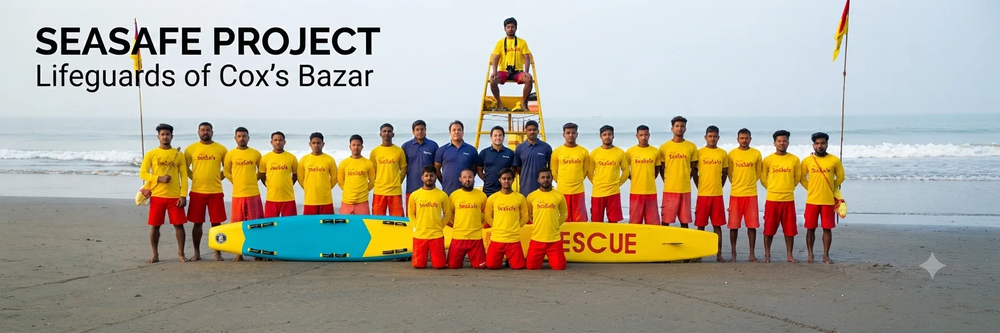
News and events
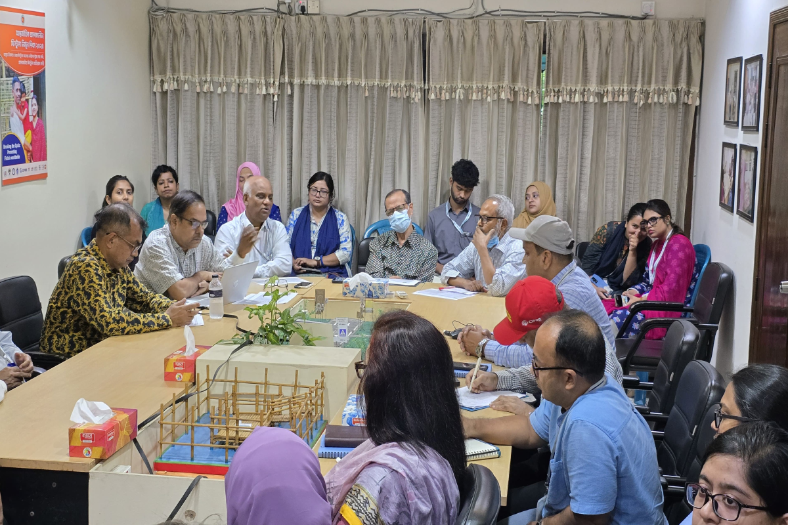
World Drowning Prevention Day seminar
Read the event recapOur partners
Meet CIPRB’s partners Government of Bangladesh
Government of Bangladesh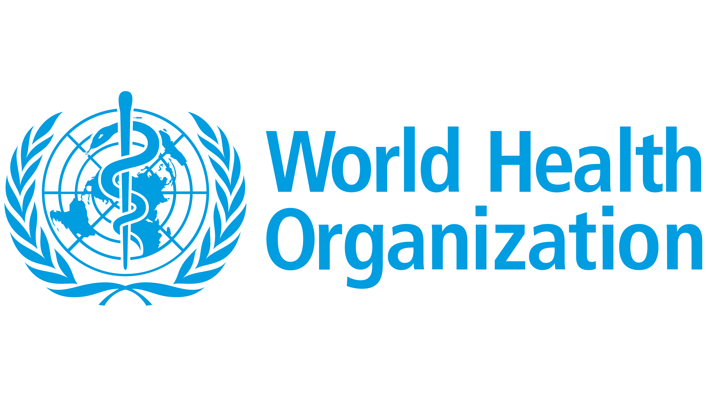
World Health Organization RTI International
RTI International BSMMU
BSMMU Directorate General of Family Planning
Directorate General of Family Planning Directorate General of Health Services
Directorate General of Health Services Johns Hopkins University
Johns Hopkins University Karolinska Institutet
Karolinska Institutet International Centre for Diarrhoeal Disease Research, Bangladesh
International Centre for Diarrhoeal Disease Research, Bangladesh
 Liverpool School of Tropical Medicine
Liverpool School of Tropical Medicine Plan International
Plan International Royal Life Saving Society Australia
Royal Life Saving Society Australia- Royal National Lifeboat Institution
 Save the Children
Save the Children UNICEF
UNICEF United Nations
United Nations The University of Texas at Austin
The University of Texas at Austin UWE Bristol
UWE Bristol